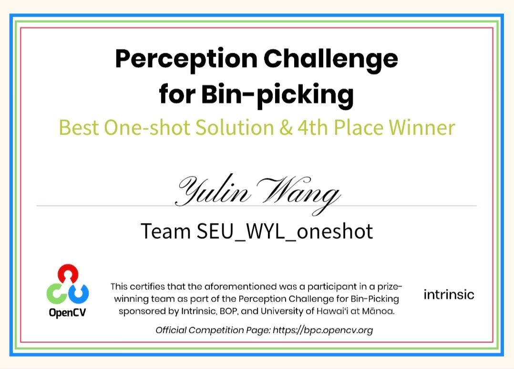
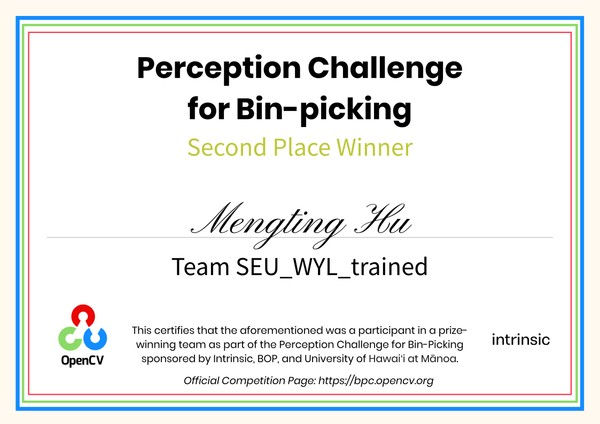
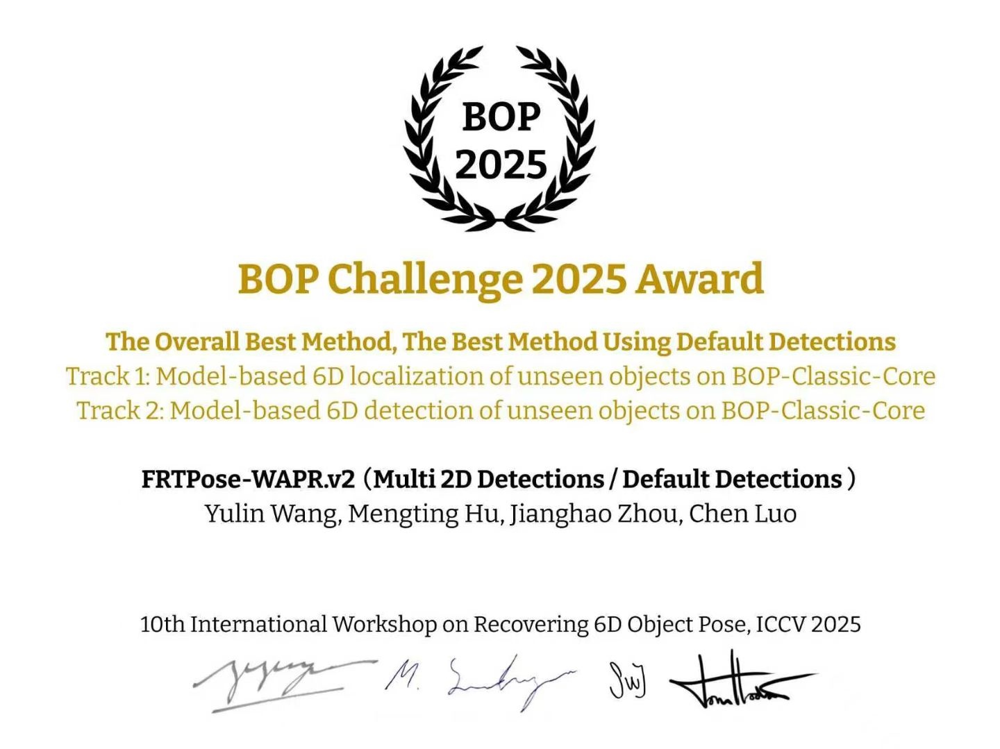
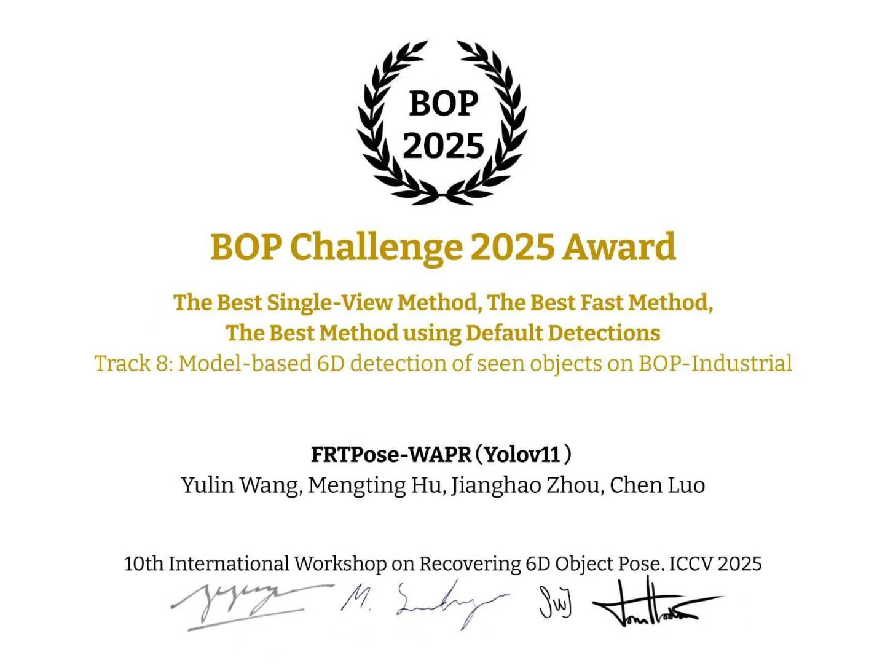
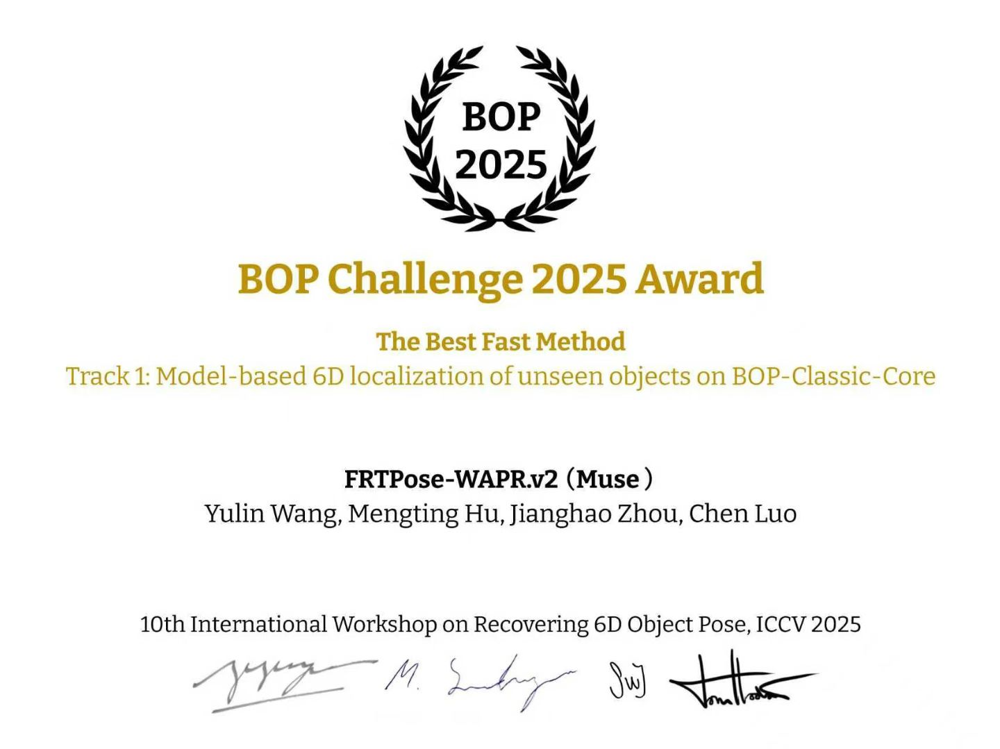
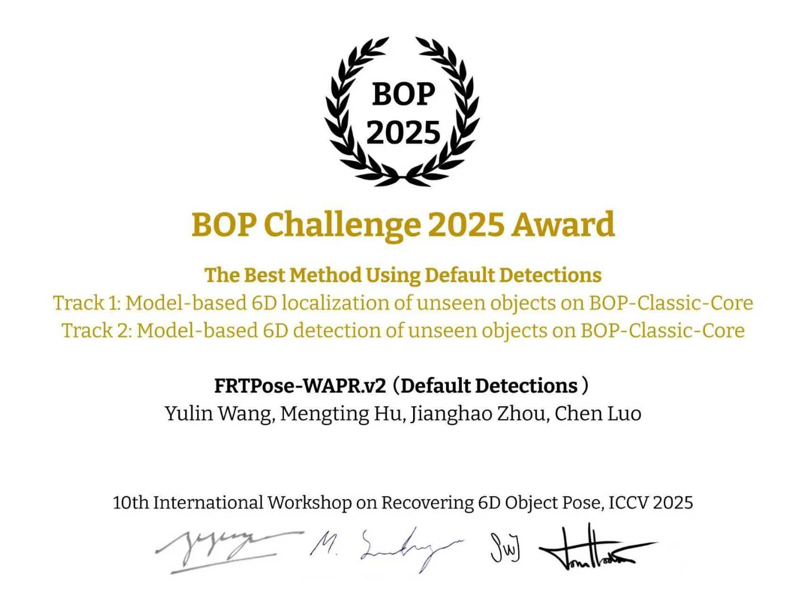
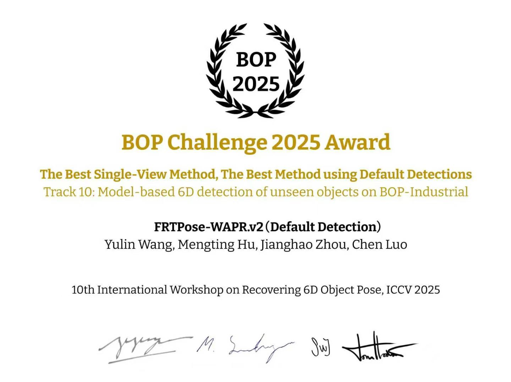
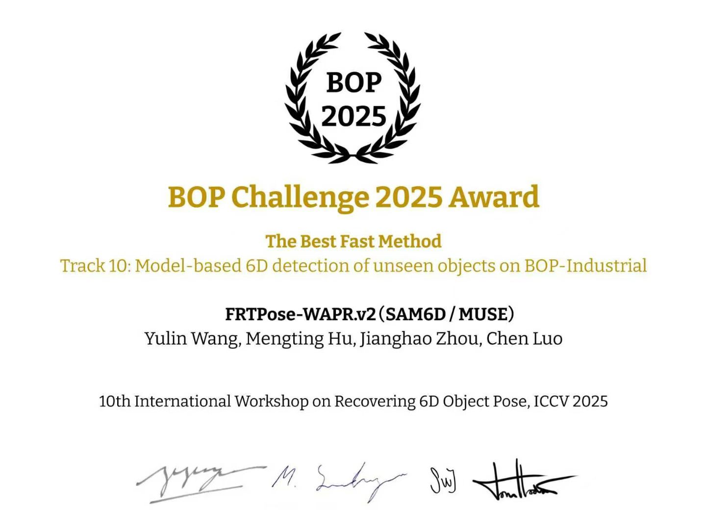

WAPR: A Foundation Model for Wide-Angle Refinement in Unseen Object Pose Estimation WAPR：未见物体位姿估计中的广角修正基础模型
ECCV 2026
1Southeast University 2Purdue University1东南大学 2普渡大学
*Equal contribution. LNCS 17016, pp. 221–239.*共同一作。LNCS 17016，第 221–239 页。
WAPR refines the 6D pose of an object absent from pose-model training. Provide RGB-D, camera intrinsics, a metric mesh, and a mask or box. Training covers candidate rotation errors up to 90°. The default recipe uses 12 hypotheses, three WAPR updates, two SAPR updates, and WBPS ranking. A metric mesh is still required at inference.WAPR 修正位姿模型训练时未见过的物体的 6D 位姿。输入为 RGB-D、相机内参、米制网格，以及 mask 或框。训练覆盖高达 90° 的候选旋转误差。默认流程使用 12 个候选、三次 WAPR 更新、两次 SAPR 更新，再由 WBPS 排序。推理时仍需提供米制网格。
Abstract摘要
WAPR addresses pose refinement when the initial rotation may be far from the target. It is trained with candidate rotation errors up to 90°. The paper's fast setting reports inference within one second per frame and throughput up to 25 detected instances per second. The release's RTX 5090 OpenGL + TensorRT FP16 benchmark processes 100 supplied instances in 1.11–1.14 s, approximately 88–90 instances/s in the warmed batch pose stage, with twelve candidates per instance; this measurement excludes 2D detection and NMS. This release provides masked and unmasked WAPR checkpoints, SAPR (Small-Angle Pose Refinement), and WBPS (Within-and-Between Pose Score): the first two refine candidate poses, and WBPS ranks them. All four foundation-model checkpoints were trained on the SA6D dataset. “Unseen” means the object was absent from pose-model training; a metric object mesh is still needed at inference time. The demonstrations then connect this model-based refiner to 2D detection, 6D localization and detection, tracking, and mesh reconstruction.
WAPR 处理初始旋转与目标位姿相差较大时的位姿修正，训练时覆盖高达 90° 的候选旋转误差。论文快速设定报告单帧 1 秒以内推理、最高每秒 25 个检测实例。发布版的 RTX 5090、OpenGL + TensorRT FP16 实验以每实例十二个候选，在预热后的批量位姿阶段用 1.11–1.14 秒处理 100 个指定实例，约每秒 88–90 个实例；该测量不含 2D 检测与 NMS。本发布包提供带掩码与不带掩码的 WAPR 权重、SAPR（小角位姿修正）及 WBPS（组内与组间位姿评分）：前两者修正候选位姿，WBPS 对结果排序。这四份基础模型权重均基于 SA6D 数据集训练。“未见”指位姿模型训练时未使用该物体；推理时仍需提供米制物体网格模型。后续演示将这一位姿修正模型接入 2D 检测、6D 定位与检测、跟踪和物体网格模型重建流程。
RGB-D pose refinement, batch inference and trackingRGB-D 位姿修正、批量推理与跟踪
WAPR provides masked and mask-free wide-angle refinement, SAPR small-angle refinement, and WBPS pose scoring. It accepts masks or boxes and processes supplied instances in batches without per-object pose-model fine-tuning. Examples cover 6D localization, detection, pose tracking, optional mesh reconstruction and robot simulation.
WAPR 提供带掩码与无掩码广角修正、SAPR 小角修正及 WBPS 位姿评分。支持 mask 或框，并批量处理给定实例，无需逐物体微调位姿模型。示例涵盖 6D 定位、检测、位姿跟踪、可选网格重建及机器人仿真。
Large-motion tracking and recovery comparisons · Install WAPR · Input requirements
大运动跟踪与补救对照 · 安装 WAPR · 输入要求
Awards奖项




The following certificates are from the BOP Challenge 2025 at the 10th International Workshop on Recovering 6D Object Pose, ICCV 2025. They name FRTPose-WAPR system submissions with different 2D detectors; they do not measure the WAPR refiner in isolation. The two bin-picking certificates above distinguish a WAPR-only solution from an FRTPose-WAPR system. The official award collection lists 14 BOP award entries for the team's submissions, counted by award category and track, across seven certificates.
以下奖状来自 ICCV 2025 第 10 届 6D 物体位姿恢复国际研讨会的 BOP Challenge 2025。奖状署名为搭配不同 2D 检测器的 FRTPose-WAPR 系统提交，不能解读为 WAPR 位姿修正模型的单独评测。上面两张料箱抓取奖状分别对应纯 WAPR 方案和 FRTPose-WAPR 系统。官方奖状合集列出团队各提交共 14 项 BOP 获奖记录，按奖项类别与赛道计数，共七张奖状。
Only six of those seven BOP certificates are shown below. The remaining certificate recognizes 2D detection using a retrained YOLO model, independently of WAPR, so it is omitted from this WAPR showcase.
下方仅展示这七张 BOP 奖状中的六张。另一张来自重新训练的 YOLO 模型在 2D 检测上的获奖，与 WAPR 无关，因此不在这里展示。












Wide-angle correction广角修正
The comparison isolates rotational correction. For each object, the translation is fixed at its ground-truth value, and WAPR, MegaPose's RGB-D refiner, and FoundationPose's refiner receive the same perturbed rotation for five updates. The initial errors are 100° for the TUD-L dragon about the camera Y axis, 80° for the LM-O driller about the camera X axis, and 120° for the YCB-V clamp about an oblique axis. The figures report the residual rotation error after refinement. These individual cases illustrate why the localization and detection examples below can begin with a small set of coarse pose hypotheses; they are not an aggregate accuracy benchmark.
这一对照实验单独考察旋转修正能力。每个物体的平移固定为真值，WAPR、MegaPose 的 RGB-D 位姿修正模型和 FoundationPose 的位姿修正模型从相同的扰动旋转出发，各更新五次。初始误差分别为：TUD-L 恐龙绕相机 Y 轴旋转 100°，LM-O 电钻绕相机 X 轴旋转 80°，YCB-V 夹钳绕斜轴旋转 120°。下方图片给出修正后的剩余旋转误差。这些单独案例说明后续定位和检测为何可以从少量粗候选姿态出发；它们不代表汇总精度指标。
| Dataset数据集 | Object物体 | Initial rotation初始旋转 | WAPRWAPR | MegaPoseMegaPose | FoundationPoseFoundationPose |
|---|---|---|---|---|---|
| TUD-L | dragon恐龙 | Camera Y axis, 100°相机 Y 轴，100° | 0° | 174° | ≈95° |
| LM-O | driller电钻 | Camera X axis, 80°相机 X 轴，80° | 4° | 113° | 106° |
| YCB-V | clamp夹钳 | Oblique axis, 120°斜轴，120° | 2° | 90° | 65° |
Translation is fixed to ground truth and all refiners receive the same initial rotation. The clamp has a 180° symmetry; its error uses the nearer equivalent pose. The 100° and 120° cases exceed the 90° training perturbation range. These are individual cases, not aggregate accuracy. This five-update comparison differs from the default three-WAPR/two-SAPR recipe.
平移固定为真值，各方法接收相同初始旋转。夹钳具有 180° 对称，误差取较近等价姿态。100°、120° 案例超出 90° 训练扰动范围。这些是单独案例，不是汇总精度；五次更新对照不同于默认三次 WAPR、两次 SAPR 的流程。


6D localization6D 定位
Localization assumes the object categories and their instance counts are known, while candidate image regions are supplied by the 2D detector. In this visualization, every box with a detector score of at least 0.35 is considered for each known CAD model without using the detector's category label. Each box starts from 12 pose candidates: four tetrahedral viewing directions and three in-plane rotations per direction. The full refinement recipe applies three WAPR updates followed by two SAPR updates; WBPS then ranks the resulting poses for each object by score_6d. The candidate count and update schedule are the repository defaults. The controls below compare those predictions with the dataset's ground-truth poses.
定位任务预先给定物体类别及各类别的实例数量，候选图像区域则由 2D 检测器提供。在本页可视化中，分数不低于 0.35 的每个检测框都用于评估各个已知 CAD 模型，不采用检测器给出的类别标签。每个框生成 12 个初始位姿：正四面体的四个视线方向，每个方向取三种面内旋转。完整修正流程依次执行三次 WAPR 更新和两次 SAPR 更新，再按 WBPS 返回的 score_6d 对每个物体的结果排序。候选数量和更新次数均为仓库默认设置。下方控件可将预测结果与数据集真值位姿对照。
The left contour is the boundary of the mask taken directly from that object's rendered depth. The 3D bbox uses the same pose. The switch shows the predicted pose or the ground-truth pose. Predicted instances use distinct non-green contour colors; green contours denote ground truth. Click inside a contour or on an object mesh in the 3D view, and that object is highlighted on both sides. The point cloud is the sensor depth. Each instance on the right is displayed as a textured object mesh at the same pose.
左侧轮廓是直接用该物体的渲染深度算出 mask 之后的边界。3D 包围盒用的是同一个姿态。开关显示预测位姿或真值位姿。预测实例使用不同的非绿色轮廓，绿色轮廓仅表示真值。点击轮廓内部，或右侧 3D 视图中的物体网格模型，左右会一起高亮该物体。点云来自传感器深度。右侧各实例以对应位姿的带纹理物体网格模型显示。
Interpreting the overlays. The prediction and ground-truth views project their respective stored poses with the selected object mesh and camera intrinsics. An annotation overlay that misses the visible object indicates a disagreement among the image, annotation, object mesh, or camera calibration; this view alone cannot identify its cause. Compare the sensor point cloud and both overlays before interpreting a pose error.叠加图的解读。预测视图与真值视图分别使用对应的位姿、所选物体网格和相机内参投影。若标注轮廓偏离图像中的物体，说明图像、标注、物体网格模型或相机标定之间存在不一致；仅凭这张图无法判定原因。解读位姿误差前，可对照传感器点云及两种轮廓。
Object meshes in this frame本帧的物体网格
6D detection & 2D detection6D 检测 & 2D 检测
Detection removes the fixed-count assumption used in localization. The 2D score threshold selects candidate boxes. WAPR and SAPR refine multiple boxes in one batch while keeping each box’s pose hypotheses together; WBPS ranks hypotheses within each box. For poses of the same object, rendered silhouettes with IoU above 0.5 are suppressed in favor of the pose with the higher score_6d. The remaining poses retain their WBPS scores. In this visualization, a score of 0.5 marks each result chip with a blue or gray dot; the color distinguishes the displayed pose-score groups and is not an additional filtering step or a calibrated probability.
检测任务不预先限定实例数量。流程先按 2D 分数阈值选择候选框。WAPR 与 SAPR 将多个框的候选姿态批量计算修正，同时保留每个框的独立分组；WBPS 再在各组内选出位姿。对于同一物体，若两个位姿的渲染轮廓 IoU 大于 0.5，则保留 score_6d 更高的结果。其余位姿保留各自的 WBPS 分数。本页以 0.5 为界，用蓝色或灰色圆点标记结果控件；颜色用于区分展示的位姿分数组，并非额外的过滤步骤，也不表示校准后的概率。
wapr.det2d performs CAD-conditioned 2D detection and segmentation. Its object identities come from the supplied object-mesh library; the test frame does not provide a list of present objects or their instance counts. GroundingDINO proposes boxes from the generic prompt items ., SAM 2.1-L segments their visible regions, and DINOv2 ViT-L/14 matches the masked crops to rendered mesh templates. Each object has 42 template views with four in-plane rotations per view. The number beside a box is a fused matching score used for ranking and thresholding, not a calibrated probability. Same-category mask suppression removes overlapping duplicates while allowing multiple instances of a category. The detector guide details the features, score gate, and template preparation.
wapr.det2d 执行基于 CAD 的 2D 检测与分割。物体类别来自提供的物体网格模型库；测试帧不提供当前出现物体的名单或实例数量。GroundingDINO 用通用提示词 items . 生成候选框，SAM 2.1-L 分割可见区域，DINOv2 ViT-L/14 将掩码裁剪与渲染网格模板匹配。每个物体有 42 个模板视角，每个视角再取四种面内旋转。框旁数值是用于排序与阈值过滤的融合匹配分数，并非校准概率。同类掩码抑制移除重叠候选，但允许同类多个实例。特征、分数阈值与建库过程见检测器指南。
6D pose results6D 位姿结果
Select a result to highlight the same instance in both views.点击结果，在上方两幅图中高亮同一实例。
6D tracking6D 跟踪
In the recorded large-motion mustard sequence mustard_easy_00_02, updating poses every 32 frames gives WAPR 100% ADD recall and 4.6 mm mean ADD, versus FoundationPose’s 68.2% and 36.3 mm. FoundationPose loses accurate tracking in parts of this comparison. Both methods start from the same predicted mask; neither reinitializes poses in this sequence. Recall uses ADD below 0.1 object diameter. These are sequence-specific results.
在录制的大运动芥末瓶序列 mustard_easy_00_02 中，每 32 帧更新一次位姿，WAPR 的 ADD 达标率为 100%、平均 ADD 为 4.6 mm；FoundationPose 分别为 68.2% 和 36.3 mm，对照中部分帧出现跟踪失效。双方从同一预测掩码开始，该序列均不重新初始化位姿。达标阈值为物体直径的 0.1 倍；这些是此序列的结果。
Lost-track recovery is a separate optional workflow using DINOv2 candidate search and pose scoring. The sugar-box example retains failed predictions and demonstrates recovery behavior; it does not guarantee recovery for every sequence.
跟踪丢失补救是单独的可选流程，使用 DINOv2 候选搜索及位姿评分。糖盒案例保留失败预测并展示补救表现，不保证所有序列都能恢复。
Cracker and mustard initialize from predicted masks; sugar uses a shared supplied initial mask and independent DINOv2 recovery. Red outlines are estimates, green outlines are offline references. ADD recall counts poses below 0.1 of the object diameter.
饼干盒与芥末瓶使用预测掩码初始化；糖盒共享给定初始掩码，并独立执行 DINOv2 补救。红色轮廓为预测，绿色为离线参考；ADD 达标率统计误差低于物体直径 0.1 倍的位姿。
Stride 1, cracker_box_reorient步长 1，cracker_box_reorient
Both methods initialize from the same frame-0 mask predicted by WAPRDet2D; a saved manual click specifies the instance. At stride 1, each updates its own previous pose, without a new mask. This warmed RTX 5090 validation reaches 100% ADD recall for both methods, with mean errors of 6.0 mm for WAPR and 5.1 mm for FoundationPose. Initialization takes 90.7 and 552.0 ms; normal update medians are 69.6 and 68.5 ms. Detection, DINOv2 mask tracking and drawing are measured separately. This is the demonstration experiment, not a measurement of the public batch tracking interface.
两种方法用同一块 WAPRDet2D 预测的第 0 帧掩码初始化，由保存的人工点击指定实例。步长 1 时，各自更新上一帧位姿，不使用新的掩码。RTX 5090 预热后的这段验证中，两者 ADD 达标率均为 100%，WAPR 平均误差 6.0 mm，FoundationPose 为 5.1 mm；初始化分别为 90.7、552.0 ms，常规更新中位数为 69.6、68.5 ms。检测、DINOv2 掩码跟踪与绘图另计。这是演示实验，不是公共批量跟踪接口的测量。
Stride 32 without pose re-estimation: mustard_easy_00_02步长 32，不重新估计位姿：mustard_easy_00_02
DINOv2 tracks the predicted initial target mask through every raw frame. Every 32nd frame, both methods seed translation from current observed depth inside the same matched region; if matching fails, they retain their own previous translation. There is no pose rescue. This warmed RTX 5090 validation gives WAPR 100% ADD recall and 4.6 mm mean error, and FoundationPose 68.2% and 36.3 mm. Initialization takes 87.4 and 559.6 ms; normal update medians are 71.8 and 73.2 ms. Timers exclude detection, dense mask tracking and drawing.
DINOv2 在全部原始帧跟踪预测的初始目标掩码。每隔 32 帧，两种方法都从同一匹配区域内的当前实测深度设置起始平移；匹配失败时保留各自上一位姿的平移。这段不执行位姿补救。RTX 5090 预热后的验证中，WAPR 的 ADD 达标率为 100%、平均误差 4.6 mm；FoundationPose 分别为 68.2%、36.3 mm。初始化分别为 87.4、559.6 ms；常规更新中位数为 71.8、73.2 ms，不含检测、逐帧掩码跟踪与绘图。
Stride 32 with selective recovery: sugar_box1步长 32，选择性恢复：sugar_box1
The sugar-box comparison uses stride 32 and the same supplied initial mask. Both methods maintain their own previous pose and DINOv2 region state. Missing regions, front-surface depth disagreement over 0.18 m or depth-normalized area below 0.70 of the preceding valid region trigger search independently. WAPR additionally checks whether the complete-group between_group maximum is positive. Each completes its normal update before comparing search candidates. Ground-truth poses are used only to evaluate the outputs. Both methods pass on 27/29 sampled poses. Mean ADD, including failed poses, is 7.1 mm for WAPR and 70.1 mm for FoundationPose. WAPR searches on 12 updates and FoundationPose on 4. At frame 864 both fail; at 896 WAPR passes with ADD 18.4 mm, while FoundationPose remains inaccurate at 1158.2 mm. The ADD threshold is 19.8 mm. Failed poses remain in the table and video.
糖盒对照采用步长 32，共享给定的初始掩码。两侧各自维护上一位姿和 DINOv2 区域状态，区域缺失、前表面深度偏差超过 0.18 m，或按深度归一化的面积低于上一有效区域的 0.70 倍时独立触发搜索。WAPR 还检查完整组 between_group 的最大值是否为正。双方先完成常规更新，再与搜索候选比较；真值位姿仅用于评价输出。 双方均为 27/29 个采样位姿达标。包含失败位姿的平均 ADD 为 WAPR 7.1 mm、FoundationPose 70.1 mm；分别在 12 次和 4 次更新中搜索。第 864 帧双方未达标；第 896 帧 WAPR 达标，ADD 为 18.4 mm，FoundationPose 仍为错误位姿，ADD 为 1158.2 mm。ADD 阈值为 19.8 mm；失败位姿保留在表格和视频中。
After warmup on RTX 5090, normal-update medians are 27.8 ms for WAPR and 369.1 ms for FoundationPose. Full updates containing search take 64.6–172.5 ms and 420.0–445.5 ms; initialization takes 47.7 and 431.9 ms. CUDA-synchronized update times include loss checks, normal computation, patch search, seed construction, refinement, own scoring and state writes. DINOv2 encoding, matching and region propagation are measured separately at 6.74 and 6.69 ms per raw frame. Loading, I/O, offline evaluation and drawing are excluded. The video rounds each measured update upward to 0.1 s; these are not camera FPS.
RTX 5090 预热后，常规更新中位数为 WAPR 27.8 ms、FoundationPose 369.1 ms；含搜索的完整更新分别为 64.6–172.5 ms 和 420.0–445.5 ms，首帧初始化为 47.7、431.9 ms。CUDA 同步更新计时包含失效检查、常规计算、图块搜索、起点构造、修正、各自评分及状态写回。DINOv2 编码、匹配和区域传播另计，分别为 6.74、6.69 ms/原始帧；不含加载、文件读取、离线评价和绘图。视频将每次实测更新向上取整至 0.1 秒，这些时间不表示相机帧率。
Scores分数
Each row describes its displayed trace. Cracker and mustard use predicted initialization; sugar uses the separate supplied-mask study. Pose timers exclude detection, mask tracking and drawing. The measurement details include the separately warmed sugar initialization; these different protocols are not pooled into a benchmark.
各行对应所展示轨迹：饼干盒与芥末瓶使用预测初始化，糖盒使用单独的给定掩码实验。位姿计时不含检测、掩码跟踪与绘图；糖盒单独预热补测的初始化详见测量说明。不同协议不汇总为统一基准。
| Sequence序列 | Method方法 | ADD | Mean平均mm | First首帧ms | Later之后ms |
|---|---|---|---|---|---|
cracker_box_reorientstride 1步长 1 |
WAPR | 100% | 6.0 | 90.7 | 69.6 |
| FoundationPose | 100% | 5.1 | 552.0 | 68.5 | |
mustard_easy_00_02stride 32步长 32 |
WAPR | 100% | 4.6 | 87.4 | 71.8 |
| FoundationPose | 68.2% | 36.3 | 559.6 | 73.2 | |
sugar_box1stride 32, DINOv2 recovery步长 32，DINOv2 补救 |
WAPR | 93.1% | 7.1 | 47.7 | 27.8 / 64.6–172.5 |
| FoundationPose | 93.1% | 70.1 | 431.9 | 369.1 / 420.0–445.5 |
Roller and box滚筒和木盒
Frames 80–109 of a TACO sequence follow a wooden box and a lint roller. The video places WAPR estimates beside TACO's motion-capture reference poses. The table summarizes how well each pose's visible projection agrees with a point-prompted SAM 2 region; these image scores are not 6D pose errors. Frames 80–86 cover the box's fastest motion. Annotation provenance, the scoring method, and illustrated examples are in the tracking guide.
TACO 的第 80–109 帧记录了木盒和粘毛滚筒的运动。视频将 WAPR 估计与 TACO 动捕参考位姿并列展示。表格概括两组位姿的可见投影与点提示 SAM 2 区域的重合情况；这些图像指标并非 6D 位姿误差。第 80–86 帧是木盒运动最快的一段。标注来源、评分方法和图解示例见跟踪指南。
| Object物体 | Frames帧 | Motion capture动捕 | WAPR | ||
|---|---|---|---|---|---|
| IoU ↑Higher is better越高越好 | Contour error ↓外轮廓误差 ↓px · Lower is betterpx · 越低越好 | IoU ↑Higher is better越高越好 | Contour error ↓外轮廓误差 ↓px · Lower is betterpx · 越低越好 | ||
| Box木盒 | 80–109 | 0.72 | 4.1 | 0.83 | 2.5 |
| 80–86 | 0.63 | 4.8 | 0.87 | 2.5 | |
| Roller滚筒 | 80–109 | 0.69 | 4.6 | 0.85 | 1.8 |
| 80–86 | 0.66 | 3.6 | 0.85 | 2.5 | |
ROBI · Reflective screwsROBI · 反光螺丝
Chrome screws, ROBI scene 4, view 0, observed by the Ensenso RGB-D camera. Specular reflections, repeated geometry and inter-object occlusion make candidate association difficult. WAPR combines GroundingDINO/SAM2 and FastSAM proposals with DINOv2 CAD matching, then estimates twelve initial pose hypotheses per region. The four released pose-model checkpoints were trained on SA6D.
本例展示 ROBI 场景 4、第 0 帧中的铬螺丝，输入来自 Ensenso RGB-D 相机。镜面反射、重复几何与物体间遮挡增加了候选关联的难度。WAPR 结合 GroundingDINO/SAM2 与 FastSAM 候选，通过 DINOv2 匹配 CAD 模型，并为每个区域估计十二个候选姿态。发布包中的四份位姿模型权重均基于 SA6D 训练。
The four panels compare WAPR, AAE, PPF + ICP and Line2D using each annotation’s nearest saved prediction by symmetry-aligned ADD. Both positive (blue, ADD < 0.1d) and negative (red, ADD ≥ 0.1d) samples are shown, with a threshold of 2.91 mm. Click any instance number beneath a panel to highlight its prediction and inspect its status, ADD error and available score. WAPR uses the current RTX 5090 run; baselines use published ROBI predictions without confidence scores.
四幅图片分别展示 WAPR、AAE、PPF + ICP 与 Line2D，均按对称对齐后的 ADD 为每个标注选择最近保存预测。正样本（蓝色，ADD < 0.1d）与负样本（红色，ADD ≥ 0.1d）同时绘制，阈值为 2.91 mm。点击每幅图下的实例编号，高亮对应预测，查看正负状态、ADD 误差与可用评分。WAPR 使用现行 RTX 5090 结果，基线使用 ROBI 公布的预测，未提供置信度。
Loading comparisons…正在加载对比图片…

White wedges, one bowl白色三角块，一只碗
This is HCCEPose RGB-D frame 000003: white printed wedges in a glass bowl, captured with an iHawk100R RGB-D camera (manufacturer's product page). WAPR uses the supplied demo-bin-picking object-1 mesh. GPU rendered-mask NMS retains seven of the nine saved viewer candidates: when mask IoU exceeds 0.5, the higher WBPS score is kept. This frame has no pose annotation, so the view does not establish ADD accuracy. Click a chip, contour, or object mesh to isolate one candidate; click the selected chip again to show all. Drag to orbit, and double-click to reset the camera.
这一帧是 HCCEPose 使用 iHawk100R RGB-D 相机采集的第 000003 帧（厂商产品页面）：玻璃碗里的白色打印三角块。WAPR 使用提供的 demo-bin-picking 物体 1 网格模型，对九条已保存的展示候选执行 GPU 渲染 mask NMS 后保留七条：mask IoU 大于 0.5 时优先保留 WBPS 分数较高者。这帧没有位姿标注，因此不能据此计算 ADD 准确率。单击控件、轮廓或物体网格模型可单独查看一条候选；再次单击已选控件可显示全部。拖动可绕视角观察，双击回到相机视角。
This capture has no annotated pose, so the viewer shows WAPR candidates without an ADD comparison. The custom-data guide describes the RGB-D inputs and CAD mesh used here.
本次采集没有位姿标注，查看器仅展示 WAPR 候选，不作 ADD 对比。RGB-D 输入与 CAD 网格见自定义数据说明。
Author-provided camera price estimates: used, about CNY 250 (US$37); new, about CNY 1,000 (US$149). USD equivalents use the 5 October 2026 reference rate of approximately CNY 6.705 per US dollar.
相机参考购置价格：二手约人民币 250 元（约 37 美元），全新约人民币 1,000 元（约 149 美元）。人民币价格为作者提供的估计；美元按 2026-10-05 参考汇率 1 美元约合 6.705 元人民币换算。
Robot placement in simulation仿真环境中的机器人放置
The known-mesh Panda case uses table and wrist RGB-D cameras to estimate 6D object poses. Those estimates inform the initial side grasp and target placement. Red marks the estimate, green the simulator pose, and cyan dashes the camera view. In examples 14–15, the arm uses the first-frame estimate and a color-based object mask. Green outlines and final placement errors are measured afterward; they are not control inputs. See the robot guide for the setup and study path.
已知网格的 Panda 案例使用桌面和腕部 RGB-D 相机估计物体 6D 位姿；估计结果参与初始侧面抓取和目标放置。红色表示估计位姿，绿色表示仿真位姿，青色虚线表示相机视野。示例 14–15 中，手臂使用第 0 帧的位姿估计和按颜色提取的物体 mask。绿色轮廓与最终落点误差仅用于事后对照，不进入控制。环境准备与学习路径见机器人指南。
Yellow bottle, two pose cameras黄色瓶子，两个位姿相机
Panda, one yellow bottle and one red box. The task is to grasp the bottle from the side and place it upright to the right of the box. The top row is what each camera sees. The bottom row overlays the table-camera and wrist-camera results on separate copies of the same third-person view. The blue lines are the side grasp on that panel's estimated bottle, redrawn every frame. The wrist camera starts looking straight down at the top of the box, so the box reads as a flat card. The clip begins once the camera has come around and a side of the box is visible. The first frame is a full estimate. Later frames track that pose, the same tracker as the YCBInEOAT clips. Across the recorded frames the table camera stays near 1.3 mm and 0.2°. While the fingers are closed the wrist stays near 1.1 mm and 0.4°. After the arm backs away the wrist only sees the cap, and that track stays about 100 mm off. The table camera on those frames stays near 1.0 mm.
Panda 场景包含一只黄色瓶子和一个红色盒子；任务是从侧面抓取瓶子，并将其直立放在盒子右侧。上排展示两台相机各自的画面；下排在相同的第三人称视图上，分别叠加桌面相机和腕部相机的结果。蓝色实线是侧面抓取，逐帧叠加在对应相机估计出的瓶子位姿上。腕部相机一开始正俯视盒子顶面，盒子在图像中近似为一个平面。视频从相机侧过来、盒子露出侧面的那一帧开始。第一帧是完整估计。后续帧采用与 YCBInEOAT 片段相同的流程更新位姿。录下来的帧里，桌上相机停在 1.3 mm、0.2° 附近。手指合上时，腕部停在 1.1 mm、0.4° 附近。手臂退出之后，腕部只看见瓶盖，这次跟踪停在大约 100 mm。这几帧上的桌上相机停在 1.0 mm 附近。
Meshes supplied with the robot tasks机器人任务提供的物体网格
The mesh comes with each robot task. WidowX places the carrot on the plate: its first-frame pose center is 3.6 mm from the simulated center, and the final horizontal placement error is 3.5 mm. The eggplant has a frame-0 estimate with a 0.91 mm center error. Of its 66 frames, 30 have color masks below the 150-pixel input threshold and do not enter pose estimation. The 36 estimated frames have a 0.94 mm median center error and a 13° mesh Z-axis error; placement is 4.0 mm from the target. xArm6 places the cube 1.6 mm from its target, with a 1.2 mm median center error. Its approximately 90° mesh-axis difference reflects the plain cube's rotational ambiguity; the gripper closes along world +Y. These are single episodes, not benchmark accuracy figures.
网格由各机器人任务提供。WidowX 把胡萝卜放到盘子上：第 0 帧估计中心距仿真中心 3.6 mm，最终水平落点误差 3.5 mm。茄子首帧得到位姿估计，中心误差约 0.91 mm。66 帧中有 30 帧的颜色掩码小于 150 像素的输入门槛，未进入位姿估计；其余 36 帧的中心误差中位数为 0.94 mm，网格 Z 轴误差为 13°；落点误差 4.0 mm。xArm6 放置方块的偏差为 1.6 mm，中心误差中位数为 1.2 mm。方块约 90° 的网格轴差异与其单色、近对称的外观有关；夹爪沿世界 +Y 合拢。这些都是单次回合，不是基准精度。
Each clip's third-person camera also provides the perception RGB-D. A color mask and the frame-0 estimate set the actual grasp before the arm moves. The red outline and cyan grasp mark are then redrawn from each frame's estimate; their later motion does not change the already planned grasp. In 43 of 66 carrot frames, gripper occlusion makes the estimate jump away from the object. Those later errors must not be presented as the initial grasp error.
视频中的第三人称相机同时提供感知 RGB-D。手臂运动前，颜色 mask 与第 0 帧位姿估计确定实际抓取。之后的红色轮廓和青色抓取标记逐帧按估计结果重画；标记移动不会改变已规划的抓取。胡萝卜有 43/66 帧在夹爪遮挡后估计跳离物体，不能把这段后期误差当作初始抓取误差。


Open-vocabulary guided single-frame reconstruction开放词汇引导的单帧重建
Describe the target in natural language to select it in a single RGB-D image. Qwen2.5-VL-3B predicts its box and SAM 2 segments it; the selected region then enters the same reconstruction, metric sizing and pose alignment stages as the point-selected route. This open-vocabulary selection route defaults to outline sizing. The saved mesh can be reused for cross-scene pose estimation below. The panels show the following saved results: the fourth panel and viewer use the point-prompt UV mesh; the last panel records the language-prompt alignment. The panels come from the stated prompt routes and do not constitute a run of the consolidated recipe.
用自然语言描述目标，在一张 RGB-D 图像中选择要重建的物体。千问 2.5-VL-3B 预测目标框，SAM 2 分割目标，再将选中的区域送入与点选方式相同的重建、米制定标与位姿对齐流程。这种开放词汇选择方式默认使用轮廓定标，保存的网格可继续用于下方的跨场景位姿估计。下方展示的结果中，第四格与查看器使用点提示的 UV 网格，最后一格记录语言提示的对齐结果，这些面板分别来自所述提示方式，不能作为整合后流程的运行结果。


The point-prompt workflow, cracker-box mesh and pose views, and additional reconstruction comparisons are included in Docs.
点提示流程、饼干盒网格与位姿展示以及更多重建对比见 Docs。
Cross-scene pose estimation with a single-frame reconstructed mesh基于单帧重建网格的跨场景位姿估计
将一张 RGB-D 图像中重建并定标的网格用于另一场景的物体检测与 6D 位姿估计。示例 12 读取示例 11 的网格，预测目标掩码，再批量修正候选位姿。完整步骤见跨场景流程。
Reuse the metrically sized mesh from one RGB-D image to detect the same object and estimate its 6D pose in another scene. Example 12 reads example 11’s mesh, predicts a target mask, and refines pose hypotheses in a batch. See the complete cross-scene workflow.
The mustard cross-scene experiment transfers a mesh from YCBInEOAT mustard0 to YCB-V scene 50, frame 1130. The selected detection scores 0.767; offline mask IoUs are 0.941 for detection and 0.885 for the projected pose. References are read only after prediction. These are single-frame results; the documentation gives all candidates, scores and conditions.
芥末瓶跨场景实验将 YCBInEOAT mustard0 中的重建网格用于 YCB-V 场景 50、第 1130 帧。选中检测的分数为 0.767；事后掩码 IoU 为检测 0.941、位姿投影 0.885，参考仅在预测后读取。这些是单帧结果，全部候选、评分与条件见文档说明。


score_6d. Blue 0.86 is kept, and the magnified mesh is that pose. Its within_group is 63.7. Gray 0.30, 0.19, and 0.12 stay off the bottle.每条轮廓上的数字是返回值 score_6d。蓝色 0.86 留下，放大的网格就是这个位姿，它的 within_group 是 63.7。灰色 0.30、0.19、0.12 落在瓶子轮廓之外。Citation引用
@InProceedings{wang2026wapr,
author = {Wang, Yulin and Hu, Mengting and Li, Hongli and Zhou, Jianghao and Luo, Chen},
title = {WAPR: A Foundation Model for Wide-Angle Refinement in Unseen Object Pose Estimation},
booktitle = {ECCV},
year = {2026},
pages = {221-239},
volume = {17016}
}
Public model weights use CC BY-ND 4.0: free commercial use, attributed redistribution of the original weights, and no sharing of adapted weights under this license. For enterprise versions or customization, contact Yulin Wang.
公开权重采用 CC BY-ND 4.0：免费允许商用，原样再发行须署名，本许可不允许共享修改版权重。企业版本或定制需求请联系 Yulin Wang。
External models, datasets, comparison methods, and simulation tools are credited in Acknowledgments and references, with links to primary papers or official project pages.
外部模型、数据集、对照方法及仿真工具见致谢与参考资料，其中链接至原始论文或官方项目页面。